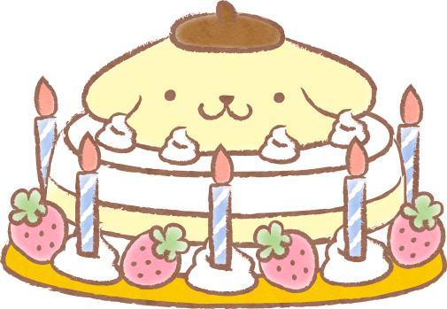

✿
🌷
CAPÍTULO I
Felicidades, Melzinha 🎈🎂
(っ˶ ˘ ᵕ˘)ˆᵕ ˆ˶ς)
♡
Así que en tu dia decidi prepar este pequeño espacio ya que no quisiste que te mande algo (se deprime), y poder dedicarte algunas palabras y un poquito del enorme cariño que te tengo.

🌷
Para vos, Wawa 💛